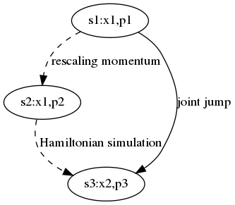
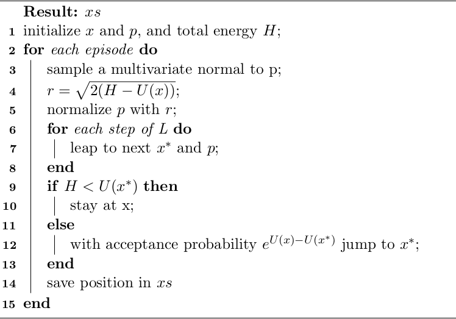

Table of Contents
Title
哈密顿蒙特卡洛的稳定性和正确性问题的讨论
Abstract
哈密顿蒙特卡洛是广泛应用于统计和物理领域的计算方法，然而它的一些潜在的问题可能会给研究结果带来的负面影响。这种方法的一个主要问题是不稳定，其根源在于没有保持总能量守恒。该算法的更大问题在于的接受概率公式没有满足Metropolis公式。本文讨论这些的问题，并给出改进方法。
Main
哈密顿蒙特卡洛种方法的主要缺点是容易发散或者陷入局部。另一个容易忽略的问题是抽样准确度较低。
实际上，一个正确的方案应当满足以下条件：
- 抽样算法满足Metropolis-Hastings公式
- 仿真算法保持稳定
Metropolis
这里先介绍Metropolis-Hastings算法，然后再分析HMC的接受概率存在的问题。 受到krauth的statistical mechanics algorithm and computation的启发，我们采用扔皮球的方式进行讨论。 此时从位置a扔一个皮球，假设皮球只能落在位置a,b,c三个位置上。 系统处于a,b等位置的静态概率为： \[\pi(a),\pi(b),\dots\] 假设从位置a移动到位置b以后，根据一个概率决定是否接受这个移动。 如果位置之间的跳转概率不等，那么总的转移概率\[\mathcal P(a \to b)\]分为两部分，即从皮球从位置a出发，落在b的概率，以及接受这个跳转的概率。 \[\mathcal P(a\to b)=\mathcal A(a \to b)\cdot p(a \to b)\] 其中\[\mathcal A(a\to b)\]是从位置a移动到位置b的概率,而\[p(a\to b)\]是接受这个移动的接受概率。 于是得到Metropolis-Hastings算法: \[p(a\to b)=\min[1,\frac{\pi(b)}{\mathcal A(a\to b)}\frac{\mathcal A(b \to a)}{\pi(a)}]\]
如果位置a和b之间的相互跳转概率相同（满足如下公式）： \[\mathcal A(a \to b)=\mathcal A(b \to a)\] ，则Metropolis-Hastings算法会简化为Metropolis算法。
此外，在哈密顿动力学中，如果两个状态能够相互转换，并且总能量相同，则二者的相互跳转概率亦相同。因此能量守恒的哈密顿系统可以应用Metropolis算法来计算状态的概率。
HMC
Hamiltonian Dynamics
哈密顿系统中，总能量等于动能和势能之和： \[H=K+U\]
哈密顿公式指出了变量对时间的导数和能量对变量的偏导数之间具有如下关系 \[\dot x=\frac{dK}{dp}\] \[\dot p=-\frac{dU}{dx}\]
假设未知概率 π(x) 参数的维度很高，则普通的蒙特卡洛方法无法进行抽样。
这时可以其用势能来表示此概率：
\[U(x)=-\log \pi(x)\]
动能一般取二次函数:
\[K(p)=\frac{p^T p}{2}\]
通过哈密顿仿真得到轨迹，在轨迹上使用蒙特卡洛进行抽样，可以获得 π(x) 的参数。
Problems
以下是哈密顿蒙特卡洛算法[information theory, inference and learning,p388]。
该算法有两个问题：
- 接受概率
- 能量守恒
我们逐个进行讨论。


Accept prob.
算法第3行重新生成动量，第3行之前动量p1，对应于状态s1，第3行之后动量变为p2，对应于状态s2。这两个状态的位置没有变化，都是x1。 算法第5行到第7行运行哈密顿仿真，第7行之后为状态s3。
算法第4行为每次仿真前的总能量，第8行为仿真后的总能量。由于哈密顿仿真保持总能量不变，因此（从原则上）仿真前后的总能量相同，但具体的位置和动量都有变化。
由于状态s2到s3为哈密顿仿真，当不考虑仿真误差时，其相互跳转概率相等：
\[\mathcal A(s_2 \to s_3) = \mathcal A(s_3 \to s_2)\]
实际上，当考虑哈密顿仿真的数值误差时，也会得到相似的实验结果。
状态s1和s2之间位置和势能相同，二者的区别在于动量及动能不同。 因此得到： \[\frac{\mathcal A(s_1\to s_3)}{\mathcal A(s_3\to s_1)} =\frac{\mathcal A(s_1\to s_2)}{\mathcal A(s_2\to s_1)} = \frac{P(K(p_2)|K(p_1))}{P(K(p_1)|K(p_2))}=e^{K(p_1)-K(p_2)}\] 由于： \[\pi(s_1)=e^{-U(x_1)}\] \[\pi(s_3)=e^{-U(x_2)}\] 将前面几个公式代入到Metropolis-Hastings公式，得到： \[p(s_1 \to s_3)=\min(1,e^{-U(x_2) + U(x_1) -K(p_1)+K(p_2)})\] 哈密顿蒙特卡洛所采用的接受概率公式为： \[p(s_1 \to s_3)=\min(1,e^{H(s_2)-H(s_3)})=\min(1,e^{U(x_1)+K(p_2)-U(x_2)-K(p_3)})\] 如果我们比较以上两个公式，就会发现二者之间有区别。 实际上，如果不考虑数值误差，由于哈密顿仿真不改变总能量，因此状态 \(s_2\) 和 \(s_3\) 总能量相等。因此哈密顿蒙特卡洛的接受概率是常数1。该算法实际上是在哈密顿轨迹上等间隔采样，而没有使用Metropolis算法。
Camparision
验证哈密顿蒙特卡洛的接受概率是否有问题，需要进行定量实验。这里采用一系列二维正态分布的抽样结果，并比较估计协方差的误差。 \[\Sigma = \begin{bmatrix}\frac{1}{\rho}&\rho\\ \rho&\frac{1}{\rho}\\\end{bmatrix}\] 其中 \(\rho\) 从0.1 变化到 0.9。
由于哈密顿蒙特卡洛对步长参数极为敏感，我们需要测试不同的步长，然后比较两种接受概率产生的结果。两种方法除了接受概率不同，其它的实现都相同。
当步长合适的情况下，比如从0.2到0.28，更正公式产生的误差要明显小于原来公式产生的结果。
虚线为哈密顿蒙特卡洛所的接受概率产生的误差，实线为采用更正后公式的结果。

在步长很小或者很大的情况下，两种方案的结果区别不大。采样结果依赖于步长参数是因为：在步长不适当的情况下，哈密顿仿真无法产生理想的目标轨迹，因此即使是正确的接受概率公式，也无法抽样出产生理想的样本。
Energy conservation
即使采用修正后的接受概率公式，哈密顿蒙特卡洛算法仍然可能发散或者陷入局部。这种现象的出现是由于该算法破坏了能量守恒法则。算法的第三行会重新生成一个随机的动量，这时会改变动能，因此总能量也随之改变了。 不断在不同仿真之间改变总能量可能导致总能量发散或者消失现象，这也是该算法不稳定的根本原因。
Energy Conserved HMC
如果对HMC算法进行修正，使其在重新生成动量的时候（算法第3行）保持总能量守恒(即p1和p2幅值相同)，则状态s1和状态s2的总能量相同，从而二者相互跳转概率相同。 从状态s2到s3运行哈密顿仿真，总能量不变，在不考虑数值误差的情况下，s2和s3之间相互跳转概率也相同。 因此状态s1和s3之间相互跳转概率相同。 \[\mathcal A(s_1\to s_3)=\mathcal A(s_3\to s_1)\]

根据Metropolis-Hastings公式，从状态s1到s3的接受概率为： \[p(s_1 \to s_3)=\min(1,\frac{e^{-U(x_2)}}{e^{-U(x_1)}})\]
因此在不同仿真之间保持总能量恒定的前提下，正确的接受概率的公式应当为： \[p(x_1 \to x_2)=\min(1,\frac{e^{-U(x_2)}}{e^{-U(x_1)}})\]
为了保持能量守恒，每次重新初始化动量以后，应当重新设置其向量半径。
根据恒定总能量和当前的势能，可以算出所需的动能： \[K(p)=\frac{p^T \cdot p}{2} = \frac{r^2}{2}=H-U(x)\]
由此得到动量向量的半径应当为：
\[r=\sqrt{2(H-U(x))}\]
因此动量应当在半径为 \(r\) 的超球上均匀分布。
综上所述，得到遵守能量守恒的哈密顿蒙特卡洛算法： 
与HMC及其更正的算法不同的是，保持能量守恒的算法需要在BURNIN阶段根据接受概率动态调节总能量：如果接受概率过大，则总能量过小，需要增加总能量，反之亦然。
除此以外，三种方法的实现基础相同。
如果仍然采用上述数值实验，则能量保守的（且更正的）HMC产生的估计误差显著低于HMC和更正后的HMC。误差低的原因可能是自动调节的总能量在一定程度上替代了步长参数的功能。

Conclusion
哈密顿蒙特卡洛算法存在若干问题，本文讨论了稳定性和正确性问题，解决这些问题有助于提高抽样的准确度和算法的稳定程度，也有助于该方法应用于物理和统计领域。